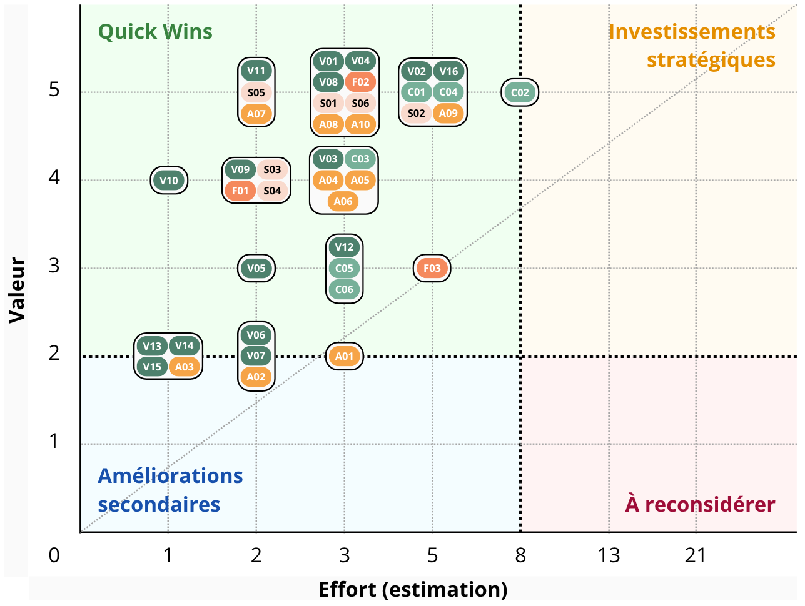
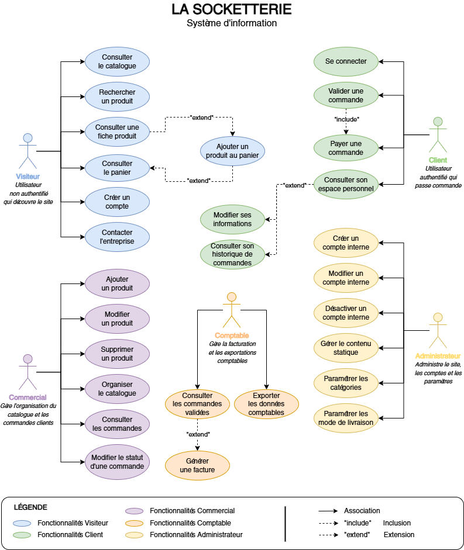
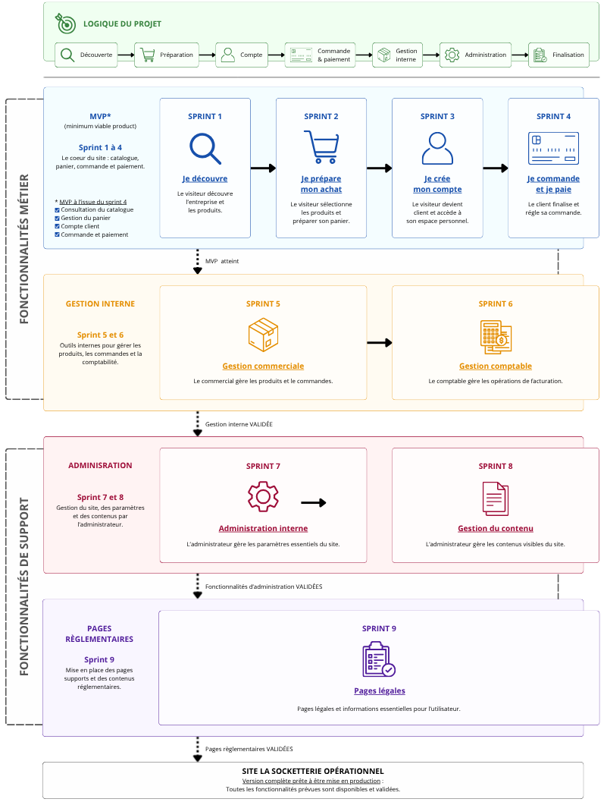
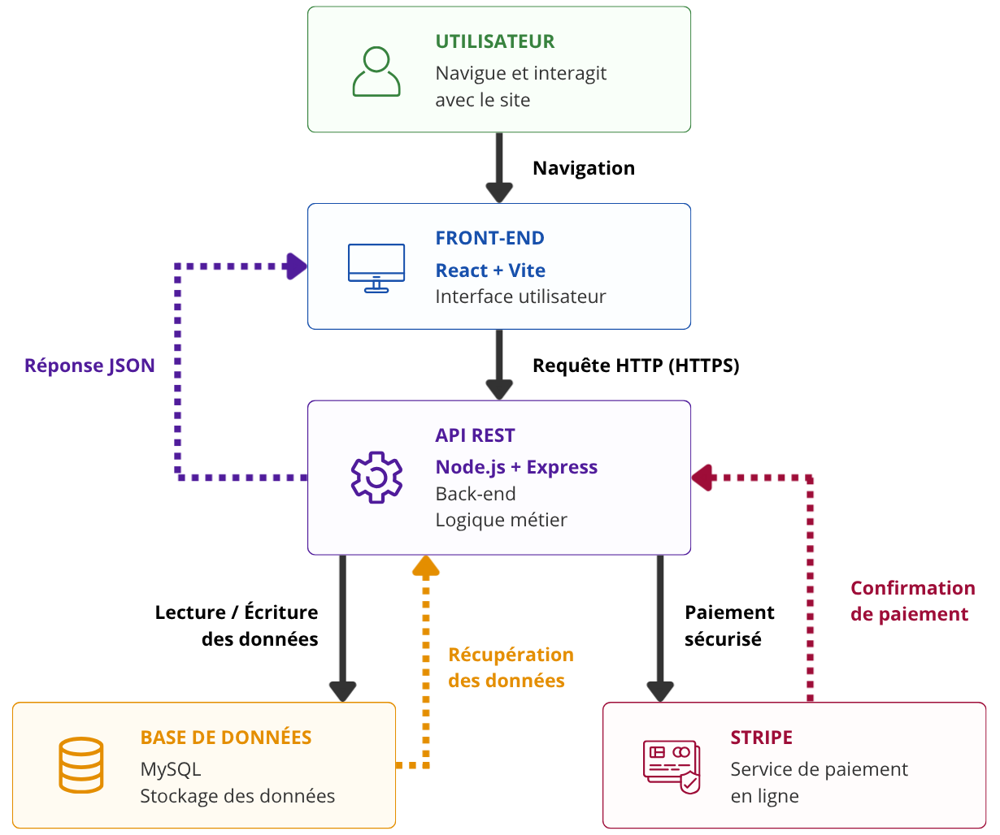
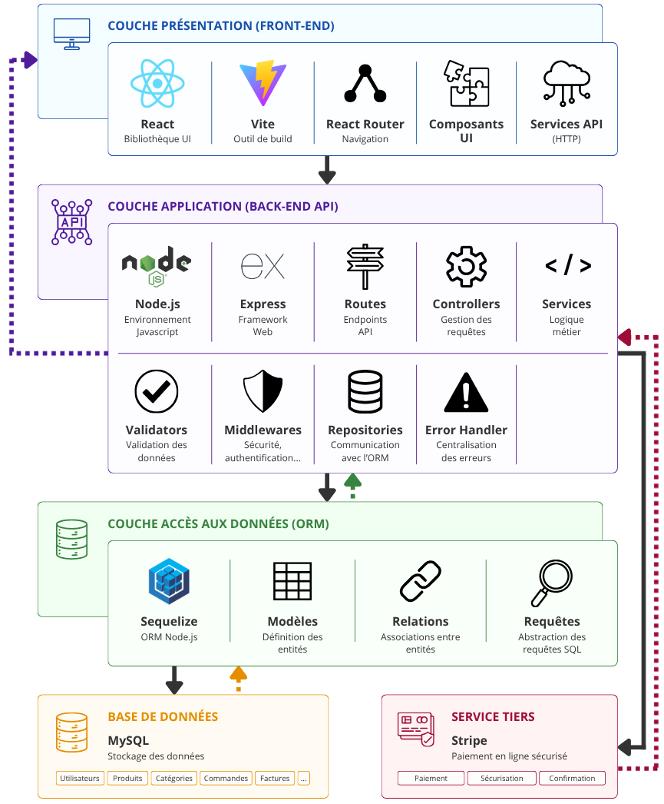

La Socketterie est une entreprise française créée en 2019 et spécialisée dans la vente de chaussettes dépareillées tricotées.
L'entreprise dispose actuellement d'une boutique physique située à Nice et souhaite développer sa présence numérique afin d'augmenter sa visibilité et de commercialiser ses produits en ligne.
Cette demande intervient dans un contexte particulier puisque l'entreprise participera prochainement à un reprotage télévisé. Le tournage est prévu dans un délai de trois mois et la diffusion un mois plus tard.
L'entreprise cible principalement une population jeune âgée de 20 à 35 ans. Le futur site devra donc proposer une expérience moderne, intuitive et adaptée aux usages actuels du commerce en ligne.
| Acteur | Rôle |
|---|---|
| La Socketterie | Client |
| Lead Developer | Validation métier et technique |
| UX/UI designers | Maquettes & expérience utilisateur |
| Développeurs | Réalisation / Développement (2 alternants disponible à 80%) |
| Freelances | Renfort ponctuel (2 freelances en contrat de 5 jours max.) |
| Équipe commerciale | Gestion produits & commandes |
| Comptabilité | Facturation & export comptable |
| Administrateur | Administration globales du site |
| Acteur | Rôle | Besoins |
|---|---|---|
| Visiteurs | Découvrir la marque. | Consulter les produits et les actualités, rechercher un produit, ajouter un articles au panier, contacter l'entreprise. |
| Clients | Acheter des produits. | Commmander des produits, payer en ligne, suivre ses commandes, gérer son compte client. |
| Service commerciale | Gérer les ventes : Suivi et gestion des commandes. | Mettre à jour les articles, éditer des informations de la commande à envoyer au service logistique, consulter les commandes et leur statut. |
| Service comptabilité | Gérer les facturations. | Consulter les commandes, consulter et éditer les factures, exporter les données (format CSV). |
| Administrateur | Gérer le site : Charger du bon fonctionnement du site. | Accéder à toutes les fonctionnalités du site. |
| Acteur | Priorité |
|---|---|
| Visiteurs | Critique |
| Clients | Critique |
| Administrateur | Haute |
| Commerciaux | Moyenne |
| Comptables | Moyenne |
| Fonctionnalité | Description |
|---|---|
| Catalogue produits | Consulter les produits |
| Recherche | Rechercher un produit |
| Fiche produit | Consulter les détails d'un produit |
| Panier | Préparer une commande |
| Formulaire de contact | Contacter l'entreprise |
| Actualités | Consulter les nouveautés |
| Fonctionnalité | Description |
|---|---|
| Création de compte | S'inscrire |
| Connexion | Accéder à son espace |
| Paiement Stripe | Régler une commande |
| Historique | Consulter les commandes |
| Gestion profil | Modifier ses informations personnelles |
| Fonctionnalité | Description |
|---|---|
| Gestion produits | Ajouter, modifier, supprimer |
| Gestion catégories | Organiser le catalogue |
| Validation commande | Validation et traitement des commandes |
| Paiement sécurisé | Stripe |
| Suivi commandes | État des commandes |
| Facturation | Édition des factures |
| Fonctionnalité | Description |
|---|---|
| Gestion utilisateurs | Administrer les comptes |
| Gestion contenus | Actualités, pages |
| Fonctionnalité | Priorité |
|---|---|
| Catalogue produits | Critique |
| Fiche produit | Critique |
| Recherche produit | Critique |
| Panier | Critique |
| Formulaire de contact | Critique |
| Création de compte | Critique |
| Connexion | Critique |
| Paiement Stripe | Critique |
| Gestion produit | Critique |
| Gestion catégorie | Critique |
| Validation commande | Critique |
| Paiement sécurisé | Critique |
| Gestion utilisateur | Critique |
| Suivi commande | Haute |
| Gestion contenu | Haute |
| Historique | Moyenne |
| Gestion profil | Moyenne |
| Facturation | Moyenne |
| Actualité | Faible |
Un utilisateur :
Un utilisateur :
Un collaborateur interne :
Un collaborateur interne :
Un collaborateur interne :
| Effort | Signification | Temporisation |
|---|---|---|
| 1 | Très simple | Moins de 2 heures |
| 2 | Simple | Une demi-journée |
| 3 | Faible complexité | Jusqu'à 2 jours |
| 5 | Complexité moyenne | Quelques jours |
| 8 | Complexe | Environ une semaine |
| 13 | Très complexe | Plus d'une semaine |
| Valeur | Signification |
|---|---|
| 1 | Faible |
| 2 | Peu utile |
| 3 | Utile |
| 4 | Importante |
| 5 | Critique |
| ID | EPIC | Acteurs principal | Objectif |
|---|---|---|---|
| E-01 | Découverte du catalogue | Visiteur | Découvrir les produits vendus par La Socketterie |
| E-02 | Recherche & navigation | Visiteur | Trouver rapidement un produit précis |
| E-03 | Consultation des produits | Visiteur | Obtenir les informations détaillées d'un produit |
| E-04 | Découverte de l'entreprise | Visiteur | Découvrir l'histoire, les valeurs et les engagements de La Socketterie |
| E-05 | Gestion du panier | Visiteur | Préparer une commande en ajoutant des produits |
| E-06 | Contact & assistance | Visiteur | Entrer en contact avec l'entreprise |
| E-07 | Informations légales | Visiteur | Consulter les informations réglementaires du site |
| E-08 | Création du compte | Visiteur | Créer un compte client utilisateur |
| E-09 | Commande et paiement | Client | Confirmer ou suivre une commande et acheter des produits |
| E-10 | Gestion du compte | Client | Gérer son espace personnel |
| E-11 | Gestion du catalogue | Commercial | Gérer les produits du catalogue |
| E-12 | Gestion des commandes | Commercial | Traiter les commandes client |
| E-13 | Facturation | Comptable | Gérer les factures et consulter la liste des commandes |
| E-14 | Gestion du contenu | Administrateur | Gérer les pages publiques et les actualités |
| E-15 | Gestion des comptes internes | Administrateur | Gérer les comptes d'accès interne : commerciaux, comptables, etc. |
| E-16 | Paramétrage du site | Administrateur | Paramétrer les catégories, modes de livraison et paramètres techniques |
| ID | EPIC | Acteur | User Story | Effort | Valeur |
|---|---|---|---|---|---|
| US-V01 |
E-01
Découverte du catalogue
|
Visiteur | En tant que visiteur, je souhaite consulter le catalogue afin de découvrir les produits proposés | 3 | 5 |
| US-V02 |
E-02
Recherche & navigation
|
Visiteur | En tant que visiteur, je souhaite rechercher un produit par mot-clé afin de trouver rapidement un article précis | 5 | 5 |
| US-V03 | Visiteur | En tant que visiteur, je souhaite filtrer les produits par catégorie afin d'affiner ma recherche | 3 | 4 | |
| US-V04 |
E-03
Consultation des produits
|
Visiteur | En tant que visiteur, je souhaite consulter la fiche détaillée d'un produit afin d'obtenir toutes les informations nécessaires avant un éventuel achat | 3 | 5 |
| US-V05 | Visiteur | En tant que visiteur, je souhaite visualiser plusieurs photos d'un produit afin de voir le produit sous différents angles ou différentes couleurs | 2 | 3 | |
| US-V06 |
E-04
Découverte de l'entreprise
|
Visiteur | En tant que visiteur, je souhaite consulter la présentation de l'entreprise afin de découvrir son histoire et ses valeurs | 2 | 2 |
| US-V07 | Visiteur | En tant que visiteur, je souhaite consulter les actualités de l'entreprise afin de suivre son activité | 2 | 2 | |
| US-V08 |
E-05
Gestion du panier
|
Visiteur | En tant que visiteur, je souhaite ajouter un produit au panier afin de préparer une commande | 3 | 5 |
| US-V09 | Visiteur | En tant que visiteur, je souhaite modifier la quantité d'un produit afin d'ajuster ma future commande | 2 | 4 | |
| US-V10 | Visiteur | En tant que visiteur, je souhaite supprimer un produit du panier afin de mettre à jour ma sélection | 1 | 4 | |
| US-V11 | Visiteur | En tant que visiteur, je souhaite consulter le contenu de mon panier afin de vérifier les produits sélectionnés avant de poursuivre ma commande | 2 | 5 | |
| US-V12 |
E-06
Contact & assistance
|
Visiteur | En tant que visiteur, je souhaite envoyer un message via le formulaire de contact afin d'obtenir une réponse à ma demande | 3 | 3 |
| US-V13 |
E-07
Informations légales
|
Visiteur | En tant que visiteur, je souhaite consulter les mentions légales afin de connaître les informations réglementaires du site | 1 | 2 |
| US-V14 | Visiteur | En tant que visiteur, je souhaite consulter les CGV afin de connaître les régles applicables aux achats | 1 | 2 | |
| US-V15 |
E-07
Informations légales
|
Visiteur | En tant que visiteur, je souhaite consulter la politique de confidentialité afin de connaître l'utilisation de mes données personnelles | 1 | 2 |
| US-V16 |
E-08
Création du compte
|
Visiteur | En tant que visiteur, je souhaite créer un compte afin de pouvoir passer commande et suivre mes achats | 5 | 5 |
| US-C01 |
E-09
Commande et paiement
|
Client | En tant que client, je souhaite valider une commande afin de finaliser mon achat | 5 | 5 |
| US-C02 | Client | En tant que client, je souhaite payer ma commande en ligne afin de confirmer mon achat | 8 | 5 | |
| US-C03 | Client | En tant que client, je souhaite recevoir une confirmation de commande afin d'être informé de la prise en compte de mon achat | 3 | 4 | |
| US-C04 |
E-10
Gestion du compte
|
Client | En tant client, je souhaite me connecter à mon compte afin d'accéder à mon espace personnel et à mes commandes | 5 | 5 |
| US-C05 | Client | En tant que client, je souhaite modifier mes informations personnelles afin de maintenir mon profil à jour | 3 | 3 | |
| US-C06 | Client | En tant que client, je souhaite consulter l'historique de mes commandes afin de suivre mes achats passés | 3 | 3 | |
| US-S01 |
E-11
Gestion du catalogue
|
Commercial | En tant que commercial, je souhaite ajouter un nouveau produit au catalogue afin de proposer de nouveaux articles à la vente | 3 | 5 |
| US-S02 | Commercial | En tant que commercial, je souhaite accéder au formulaire d'édition de produit afin de pouvoir modifier un article | 5 | 5 | |
| US-S03 | Commercial | En tant que commercial, je souhaite supprimer un produit afin de retirer un article du catalogue | 2 | 4 | |
| US-S04 | Commercial | En tant que commercial, je souhaite organiser le catalogue par catégorie afin de faciliter la navigation des visiteurs | 2 | 4 | |
| US-S05 |
E-12
Gestion des commandes
|
Commercial | En tant que commercial, je souhaite consulter les commandes afin d'assurer leur suivi | 2 | 5 |
| US-S06 | Commercial | En tant que commercial, je souhaite modifier le statut d'une commande afin de suivre son traitement et la mettre à jour | 3 | 5 | |
| US-F01 |
E-13
Facturation
|
Comptable | En tant que comptable, je souhaite consulter les commandes validées afin de préparer les opérations de facturation | 2 | 4 |
| US-F02 |
E-13
Facturation
|
Comptable | En tant que comptable, je souhaite générer une facture afin de disposer d'un document comptable associé à une commande validée | 3 | 5 |
| US-F03 | Comptable | En tant que comptable, je souhaite exporter les données comptables afin de les intégrer au système comptable de l'entreprise | 5 | 3 | |
| US-A01 |
E-14
Gestion du contenu
|
Administrateur | En tant qu'administrateur, je souhaite créer une actualité afin d'informer les visiteurs du site | 3 | 2 |
| US-A02 | Administrateur | En tant qu'administrateur, je souhaite modifier une actualité afin de mettre à jour les informations publiées | 2 | 2 | |
| US-A03 | Administrateur | En tant qu'administrateur, je souhaite supprimer une actualité afin de retirer une information obsolète | 1 | 2 | |
| US-A04 | Administrateur | En tant qu'administrateur, je souhaite gérer les contenus statiques du site afin de maintenir les pages publiques à jour | 3 | 4 | |
| US-A05 |
E-15
Gestion des comptes internes
|
Administrateur | En tant qu'administrateur, je souhaite créer un compte interne afin de permettre l'accès aux collaborateurs autorisés | 3 | 4 |
| US-A06 | Administrateur | En tant qu'administrateur, je souhaite modifier un compte interne afin de maintenir les informations et les accès des utilisateurs interne à jour | 3 | 4 | |
| US-A07 | Administrateur | En tant qu'administrateur, je souhaite désactiver un compte interne afin de supprimer les accès d'un utilisateur | 2 | 4 | |
| US-A08 |
E-16
Paramétrage du site
|
Administrateur | En tant qu'administrateur, je souhaite paramétrer les catégories de produits afin d'organiser efficacement le catalogue | 3 | 5 |
| US-A09 | Administrateur | En tant qu'administrateur, je souhaite paramétrer les modes de livraison disponibles afin de proposer différentes solutions d'expédition aux clients | 5 | 5 | |
| US-A10 | Administrateur | En tant qu'administrateur, je souhaite accéder aux paramètres techniques du site afin d'assurer son bon fonctionnement | 3 | 5 |
Les User Stories sont estimées selon la suite de Fibonacci (1, 2, 3, 5, 8, 13, 21...) afin de prendre en compte la complexité et l'incertitude croissance.
| Story Point | User Stories | Description |
|---|---|---|
|
1 point
Très simple
|
US-V10
US-V13
US-V14
US-V15
US-A03
|
US simple avec une complexité minimale. |
|
2 points
Simple
|
US-V05
US-V06
US-V07
US-V09
US-V11
US-S03
US-S04
US-S05
US-F01
US-A02
US-A07
|
Un peu plus complexe. Fonctionnalité simple avec peu de dépendances. |
|
3 points
Faible complexité
|
US-V01
US-V03
US-V04
US-V08
US-V12
US-C03
US-C05
US-C06
US-S01
US-S06
US-F02
US-A01
US-A04
US-A05
US-A06
US-A08
US-A10
|
Complexité modérée avec quelques dépendances nécessitant quelques règles et interactions. |
|
5 points
Complexité moyenne
|
US-V02
US-V16
US-C01
US-C04
US-S02
US-F03
US-A09
|
US complexe impliquant de multiples dépendances. Fonctionnalité complexe avec plusieurs règles métier. |
|
8 points
Complexe
|
US-C02
|
US très complexe ou à forte incertitude. Envisagez de la décomposer. |
|
13 points
Très complexe
|
Aucune User Story estimée à ce niveau | Trop important ou trop risqué pour être estimé avec précision. Il faut le diviser en US plus petites. |
La matrice Valeur / Effort permet de visualiser les User Stories selon deux critèes : leur valeur métier (axe vertical) et leur effort de développement estimé (axe horizontal, selon la suite Fibonacci). Cette représentation facilite la priorisation des fonctionnalités en mettant en évidence les tâches offrant le meilleur rapport entre valeur apportée et coût de réalisation.

En tant que visiteur,
je souhaite consulter le catalogue
afin de découvrir les produits proposés.
Étant donné que je suis sur le site de La Socketterie,
lorsque j'accède au catalogue,
alors la liste des produits est affichée.
Étant donné qu'un produit est indisponible,
lorsque je consulte le catalogue,
alors le produit apparaît comme indisponible mais sa fiche détaillée reste consultable sans pouvoir ajouter le produit au panier.
En tant que visiteur,
je souhaite rechercher un produit via un mot-clé
afin de trouver rapidement un article précis.
Étant donné que je consulte le catalogue,
lorsque je saisis un mot-clé existant,
alors les produits correspondant sont affichés.
Étant donné qu'aucun produit ne correspond à la recherche,
lorsque j'effectue une recherche,
alors un message indique qu'aucun résultat n'a été trouvé.
En tant que visiteur,
je souhaite consulter la fiche détaillée d'un produit
afin d'obtenir toutes les informations nécessaires avant un éventuel achat.
Étant donné que je consulte le catalogue,
lorsque je sélectionne un produit,
alors sa fiche détaillée est affichée.
Étant donné qu'un produit est indisponible,
lorsque je consulte sa fiche produit,
alors son indisponibilité est indiquée.
En tant que visiteur,
je souhaite ajouter un produit au panier
afin de préparer une commande.
Étant donné que je consulte une fiche produit,
lorsque je clique sur "Ajouter au panier",
alors le produit est ajouté au panier.
Étant donné que je consulte une fiche produit,
lorsque le produit est indisponible,
alors les sélecteurs de choix ainsi que le bouton "Ajouter au panier" sont désactivés.
En tant que visiteur,
je souhaite consulter le contenu de mon panier
afin de vérifier les produits sélectionnés avant de poursuivre ma commande.
Étant donné que j'ai ajouté un ou plusieurs produits au panier,
lorsque j'accède au panier,
alors la liste des produits sélectionnés est affichée et le montant total de la commande est calculé.
Étant donné que mon panier est vide,
lorsque j'accède au panier,
alors un message indique que le panier est vide.
En tant que visiteur,
je souhaite créer un compte
afin de pouvoir passer commande et suivre mes achats.
Étant donné que je suis sur le formulaire d'inscription,
lorsque je renseigne des informations valides,
alors mon compte est créé.
Étant donné qu'une erreur survient,
lorsque les informations sont invalides,
alors la création de compte n'est pas exécutée et le formulaire de contact retourne un message explicite sur l'erreur.
En tant que client,
je souhaite valider une commande
afin de finaliser mon achat.
Étant donné que je suis connecté et que mon panier contient des produits,
lorsque je valide ma commande,
alors une commande est créée.
Étant donné que je ne suis pas connecté,
lorsque je tente de valider ma commande,
alors je suis redirigé vers la connexion.
En tant que client,
je souhaite payer ma commande en ligne
afin de confirmer mon achat.
Étant donné que ma commande est prête,
lorsque j'effectue un paiement valide,
alors le paiement est accepté et la commande est confirmée.
Étant donné qu'une erreur survient,
lorsque le paiement échoue,
alors la commande n'est pas validée.
En tant que client,
je souhaite me connecter à mon compte
afin d'accéder à mon espace personnel et à mes commandes.
Étant donné que je possède un compte,
lorsque je saisis des identifiants valides,
alors je suis connecté à mon espace client.
Étant donné que je saisis des identifiants incorrects,
lorsque je tente de me connecter,
alors un message d'erreur explicite est affiché.
En tant que commercial,
je souhaite ajouter un nouveau produit au catalogue
afin de proposer de nouveaux articles à la vente.
Étant donné que je suis connecté en tant que commercial,
lorsque je crée un produit avec des données valides,
alors le produit est enregistré et apparaît dans le catalogue.
Étant donné que les champs obligatoires ne sont pas respectés,
lorsque je valide la création du produit,
alors un message d'erreur explicite est affiché.
En tant que commercial,
je souhaite modifier un produit existant
afin de maintenir le catalogue à jour.
Étant donné que je suis connecté en tant que commercial,
lorsque je modifie un produit avec des données valides,
alors le produit est enregistré et mis à jour dans le catalogue.
Étant donné que les champs obligatoires ne sont pas respectés,
lorsque j'enregistre les modifications,
alors un message d'erreur explicite est affiché.
En tant que commercial,
je souhaite modifier le statut d'une commande
afin de suivre son traitement et informer le client.
Étant donné qu'une commande existe,
lorsque je modifie son statut,
alors le nouveau statut est enregistré.
Étant donné qu'un client consulte son compte,
lorsque le statut a été modifié,
alors il visualise la nouvelle information.
En tant que comptable,
je souhaite générer une facture
afin de disposer d'un document comptable associé à une commande validée.
Étant donné qu'une commande a été validée,
lorsque je génère une facture,
alors une facture est créée et enregistrée.
Étant donné qu'une erreur survient,
lorsque la création de la facture est effectuée,
alors un message d'erreur explicite est affiché.
En tant qu'administrateur,
je souhaite paramétrer les catégories de produits
afin d'organiser efficacement le catalogue.
Étant donné que je suis connecté en tant qu'administrateur,
lorsque je crée ou modifie une catégorie,
alors celle-ci est enregistrée et disponible dans le catalogue.
Étant donné qu'une catégorie possède déjà le même nom,
lorsque je tente de la créer,
alors un message d'erreur explicite est affiché.
En tant qu'administrateur,
je souhaite paramétrer les modes de livraison
afin de proposer différentes solutions d'expédition.
Étant donné que je suis connecté en tant qu'administrateur,
lorsque je crée ou modifie un mode de livraison,
alors celui-ci devient disponible pour les futures commandes.
Étant donné qu'une donnée est invalide,
lorsque j'enregistre le mode de livraison,
alors un message d'erreur explicite est affiché.
En tant qu'administrateur,
je souhaite accéder aux paramètres techniques du site
afin d'assurer son bon fonctionnement.
Étant donné que je suis connecté en tant qu'administrateur,
lorsque j'accède aux paramètres techniques,
alors je peux consulter et modifier les paramètres autorisés.
Étant donné qu'un utilisateur non autorisé tente d'accéder à cette fonctionnalité,
lorsque il consulte l'URL correspondante,
alors l'accès lui est refusé.
Les cas d'utilisation (Use Cases) décrivent les intéractions entre les différents acteurs et le système d'information de La Socketterie.
Ils permettent de représenter les principales fonctionnalités offertes par l'application en précisant les actions réalisées par chaque utilisateur ainsi que les réponses attendues du système.
Complémentaires aux User Stories, les Use Cases apportent une vision plus fonctionnelle du comportement de l'application et constituent un support de référence pour la conception, le développement et les phases de tests.

US-V01
Le site est accessible.
Le visiteur peut consulter les produits du catalogue.
US-V02
Le catalogue est disponible.
Le visiteur visualise les produits correspondant à sa recherche.
US-V04
Le catalogue est accessible.
Le visiteur consulte les informations détaillées du produit.
US-V08
La fiche du produit est affichée et le produit est disponible.
Le produit est présent dans le panier.
US-V11
Au moins un produit a été ajouté au panier.
Le visiteur visualise le contenu de son panier.
US-V12
Le formulaire de contact est accessible.
L'entreprise reçoit la demande du visiteur.
US-V16
Le visiteur ne possède pas de compte (id unique via email).
Le visiteur possède un compte client.
US-C01
Le client est connecté et son panier contient au moins un produit.
La commande est enregistrée et prête à être payée.
US-C02
Le client est connecté et une commande est en attente de paiement.
La commande est payée et confirmée.
US-C04
Le client possède un compte.
Le client est redirigé sur la dernière page ouverte avant connexion et les informations utilisateur sont affichées dans la barre de navigation.
US-C05 / US-C06
Le client est connecté.
Le client accède à l'ensemble des informations de son compte.
US-C05
Le client est connecté.
Les informations personnelles du client sont mises à jour.
US-C06
Le client est connecté.
Le client consulte l'intégralité de ses commandes.
US-S01
Le commercial est authentifié et dispose des droits de gestion du catalogue.
Le produit est ajouté au catalogue.
US-S02
Le commercial est authentifié et le produit existe.
Les informations du produit sont mises à jour.
US-S03
Le commercial est authentifié et le produit existe.
Le produit n'est plus disponible dans le catalogue.
US-S04
Le commercial est authentifié.
Le catalogue est structuré par catégories.
US-S05
Le commercial est authentifié.
Le commercial visualise les commandes clients.
US-S06
Le commercial est authentifié et la commande existe.
Le nouveau statut est enregistré et est visible par le client.
US-F01
Le comptable est authentifié.
Les commandes prêtes à être facturées sont consultables.
US-F02
Le comptable est authentifié et une commande valide existe.
Une facture est générée pour la commande.
US-F03
Le comptable est authentifié.
Les données comptables sont exportées.
US-A04
L'administrateur est authentifié.
Le contenu statique du site est crée ou mis à jour.
US-A05
L'administrateur est authentifié.
Le nouveau compte interne est disponible.
US-A06
L'administrateur est authentifié et le compte interne existe.
Les informations du compte sont mises à jour.
US-A07
L'administrateur est authentifié et le compte interne existe.
Le compte ne peut plus accéder au système.
US-A08
L'administrateur est authentifié.
Les catégories de produits sont mises à jour.
US-A09
L'administrateur est authentifié.
Les modes de livraison sont disponibles pour les futures commandes.
US-A10
L'administrateur est authentifié et dispose des droits nécessaires.
Les paramètres techniques et la plateforme sont mis à jour.
Les User Stories ont été regroupées dans des sprints en suivant une démarche Agile Scrum.
L'ordre de réalisation respecte la logique d'un Produit Minimum Viable (MVP) : Les fonctionnalités indispensables à la consultation du catalogue, à la préparation d'une commande et au paiement sont développées en priorité, tandis que les fonctionnalités d'administration et les contenus complémentaires sont planifiés dans les derniers sprint.

Permettre au visiteur de découvrir l'entreprise et les produits.
Permettre au visiteur de sélectionner les produits et de préparer une commande.
Permettre au visiteur de devenir client.
Permettre au client de finaliser son achat.
Permettre au commercial de gérer le catalogue et les commandes.
Permettre au comptable de gérer les opérations de facturation.
Permettre à l'administrateur de gérer les paramètres essentiels à la gestion du site.
Permettre à l'administrateur de gérer le contenu.
Finaliser la plateforme.
Cette matrice permet de faire le lien entre les Epics, les User Stories, les Use Cases et les sprints prévisionnels. Elle assure la cohérence entre les besoins fonctionnels identifiés et l'organisation du développement.
| Epic | Fonctionnalité | User Stories | Use Cases associés | Sprint |
|---|---|---|---|---|
| E-01 | Découverte du catalogue | US-V01 | UC-01 ─ Consulter le catalogue | Sprint 1 |
| E-02 | Recherche & navigation |
US-V02
US-V03
|
UC-02 ─ Rechercher un produit | Sprint 1 |
| E-03 | Consultation des produits |
US-V04
US-V05
|
UC-03 ─ Consulter une fiche produit | Sprint 1 |
| E-04 | Découverte de l'entreprise |
US-V06
US-V07
|
— | Sprint 1 |
| E-05 | Gestion du panier |
US-V08
US-V09
US-V10
US-V11
|
UC-04 ─ Ajouter un produit au panier UC-05 ─ Consulter le panier |
Sprint 2 |
| E-06 | Contact & assistance | US-V12 | UC-06 ─ Contacter l'entreprise | Sprint 9 |
| E-07 | Informations légales |
US-V13
US-V14
US-V15
|
─ | Sprint 9 |
| E-08 | Création du compte | US-V16 | UC-07 ─ Créer un compte | Sprint 3 |
| E-09 | Commande & paiement |
US-C01
US-C02
US-C03
|
UC-08 ─ Valider une commmande UC-09 ─ Payer une commande |
Sprint 4 |
| E-10 | Gestion du compte |
US-C04
US-C05
US-C06
|
UC-10 ─ Se connecter UC-11 ─ Consulter son espace personnel UC-12 ─ Modifier ses informations UC-13 ─ Consulter son historique de commande |
Sprint 3 |
| E-11 | Gestion du catalogue |
US-S01
US-S02
US-S03
US-S04
|
UC-14 ─ Ajouter un produit UC-15 ─ Modifier un produit UC-16 ─ Supprimer un produit UC-17 ─ Organiser le catalogue |
Sprint 5 |
| E-12 | Gestion des commandes |
US-S05
US-S06
|
UC-18 ─ Consulter les commandes UC-19 ─ Modifier le statut d'une commande |
Sprint 5 |
| E-13 | Facturation |
US-F01
US-F02
US-F03
|
UC-20 ─ Consulter les commandes validées UC-21 ─ Générer une facture UC-22 ─ Exporter les données comptables |
Sprint 6 |
| E-14 | Gestion du contenu |
US-A01
US-A02
US-A03
US-A04
|
UC-23 ─ Gérer le contenu statique | Sprint 8 |
| E-15 | Gestion des comptes internes |
US-A05
US-A06
US-A07
|
UC-24 ─ Créer un compte interne UC-25 ─ Modifier un compte interne UC-26 ─ Désactiver un compte interne |
Sprint 7 |
| E-16 | Paramétrage du site |
US-A08
US-A09
US-A10
|
UC-27 ─ Paramétrer les catégories de produits UC-28 ─ Paramétrer les modes de livraison UC-29 ─ Accéder aux paramètres techniques |
Sprint 7 |
| Couche | Rôle |
|---|---|
| Front-end | Afficher l'interface utilisateur et permettre les interactions |
| Back-end | Gérér la logique métier, les règles de sécurité et l'API |
| Base de données | Stockage des données : utilisateurs, produits, commandes et factures |
| Services tiers | Gérer les fonctionnalités externes comme le paiement |
| Couche | Technologie | Justification |
|---|---|---|
| Front-end | React + Vite | Interface dynamique adaptée à un site e-commerce |
| Back-end | Node.js + Express | Création d'une API REST légère et maintenable |
| ORM | Sequelize | Communication strcuturée avec la base MySQL |
| Base de données | MySQL | Données relationnelles adaptées aux produits, clients et commandes |
| Paiement | Stripe | Solution de paiement en ligne sécurisée |
| Entité | Description |
|---|---|
| Utilisateur | Compte client |
| Produit | Article vendu sur la boutique |
| Catégorie | Classement des produits |
| Commande | Achat réalisé par un client |
| DétailCommande | Détail des produits achetés par un client |
| Facture | Document lié à une commande validée |
Le schéma ci-dessous représente le flux de données entre les composants du système e-commerce.

Le schéma ci-dessous représente l'architecture technique générale du système e-commerce.

Le brief ne précise pas le volume exact de produits, de visiteurs ou de clients attendus. Les choix d'hébergement sont donc réalisés sur la base d'un besoin évolutif, adapté à un site e-commerce professionnel de taille intermédiaire, avec possibilité de montée en charge si le trafic augmente après le reportage télévisé.
| Couche | Besoin identifié |
|---|---|
| Front-end | Hébergement rapide, HTTPS, CDN, déploiement automatisé depuis GitHub |
| Back-end | Exécution d'une API Node.js/Express |
| Base de données | Stockage relationnel persistant, sauvegardes, sécurité, montée en capacité possible |
| Paiement | Paiement sécurisé, conformité, gestion des confirmations de paiement |
| Maintenance | Supervision, mises à jour, possibilité dévolution selon le trafic réel |
| Solution | Description | Couche concernée | Avantages | Inconvénient |
|---|---|---|---|---|
| Netlify | Hébergement d'applications front-end statiques et SPA | Front-end | Déploiement GitHub automatique, CDN mondial, SSL intégré | Peu adapté à l'exécution de services back-end | Peu adapté à l'exécution de services back-end |
| Vercel | Plateforme cloud optimisée pour les applications web modernes | Front-end | Très bonnes performances, intégration React/Next.js | Coût pouvant augmenter avec le trafic |
| Render | Hébergement de services Node.js et APIs | Back-end | Déploiement simple, gestion des variables d'environnement | Mise en veille sur certaines offres |
| Railway | Hébergement d'applications et bases de données managées |
Backend
DataBase
|
Mise en place rapide, interface intuitive | Ressources limitées selon le plan |
| Amazon EC2 | Serveur virtuel cloud | Back-end | Contrôle total de l'infrastructure | Administration plus complexe |
| Planet Scale | Base de données MySQL managée | DataBase | Très haute disponibilité | Plus complexe pour un projet de taille moyenne | |
| Amazon RDS | Base de données relationnelle managée | DataBase | Sauvegarde et haute disponibilité | Coût plus élevé |
| Stripe | Solution de paiement en ligne | Tiers | Sécurisé, documentation complète, leader du marché | Commission sur les transactions |
| Besoin | Solution | Justification |
|---|---|---|
| Front-end | Netlify | Déploiement automatisé, CDN mondial et excellente compatiilité React |
| Back-end | Render | Compatible Node.js/Express et administration simplifiée |
| Base de données | Railway | Hébergement MySQL managé simple à maintenir |
| Paiement en ligne | Stripe | Solution sécurisée et adaptée à un site e-commerce professionnel |
| Collaborateur | Rôle | Missions principales | Disponibilité |
|---|---|---|---|
| Cédric | Chef de projet / Développeur Full Stack | Coordination du projet, développement des fonctionnalités, intégration, tests | 100% |
| David | Développeur Front-end | Interfaces utilisateur (UI), intégration HTML/CSS/JS, responsive | 80% |
| Jonathan | Développeur Back-end | API, database, logique métier, sécurité | 80% |
| Jack | UX Designer | Analyse des besoins utilisateurs, conception de parcours utilisateurs, réalisation des wireframes, validation de l'UX | Intervention ponctuelle |
| Rose | UI Designer | Création des maquettes graphiques, Définition de l'identité visuelle, design système, création des composants graphiques | Intervention ponctuelle |
| Omar | Freelance | Renfort Front-end (optimisation, intégration, responsive) | 5 jours maximum |
| Fred | Freelance | Renfort Back-end (API, database, optimisation) | 5 jours maximum |
| Lead developer | Validation technique & relation client | Validation des livrables, arbitrage technique et relation client | Selon les besoins |
Le Work Breakdown Structure (WBS) est une méthode de planification consistant à décomposer le projet en tâches élémentaires afin d'en faciliter l'organisation, le suivi et l'estimation. Pour chaque tâche sont définis un responsable, des dépendances et une durée prévisionnelle. Ce découpage servira ensuite de référence pour la création du backlog GitHub, la mise en place du Kanban, la planification du diagramme de Gantt ainsi que le suivi de l'avancement du projet.
Les assignations présentées dans ce WBS constituent une première répartition des responsabilités. Elles pourront être ajustées lors de la planification détaillée en fonction des disponibilités de chaque collaborateur, des dépendances entre les tâches et de l'équilibrage de la charge de travail. Les développeurs freelances ne sont volontairement pas mobilisés à ce stade. Leur intervention sera décidée ultérieurement si la planification met en évidence un besoin de renfort afin de respecter les contraintes du projet et les délais fixés.
| ID | Tâche | Description | Assigné à | Dépend de | Durée |
|---|---|---|---|---|---|
| W1 ─ Analyser les besoins fonctionnels |
Phase : Analyse
|
||||
| W1-1 | Identifier les personas | Définir les différents profils utilisateurs du site. |
Cédric
|
─ | 0,25 j |
| W1-2 | Identifier les besoins utilisateurs | Recenser les besoins de chaque persona. |
Cédric
|
W1-1 | 0,50 j |
| W1-3 | Prioriser les fonctionnalités | Classer les fonctionnalités selon leur importance métier. |
Cédric
|
W1-2 | 0,25 j |
| W1-4 | Rédiger les User Stories | Décrire les besoins fonctionnels sous forme de User Stories. |
Cédric
|
W1-3 | 1 j |
| W1-5 | Rédiger les Use Cases | Décrire les principaux cas d'utilisation du système. |
Cédric
|
W1-4 | 1 j |
| W1-6 | Valider les besoins fonctionnels | Vérifier que les besoins couvrent les attentes du client et les contraintes du projet. |
Cédric
|
W1-5 | 0,25 j |
| W1-7 | Valider la faisabilité technique | Vérifier la cohérence fonctionnelle avant le lancement de la conception UX. |
Lead dev.
|
W1-6 | 0,25 j |
| W1-8 | Valider les besoins avec le client | Présenter l'analyse des besoins et obtenir la validation du client. |
Lead dev.
|
W1-7 | 0,50 j |
| Livrables : | Charge de travail | ||||
|
4 j | ||||
| ID | Tâche | Description | Assigné à | Dépend de | Durée |
|---|---|---|---|---|---|
| W2 ─ Préparer le projet de développement |
Phase : Préparation
|
||||
| W2-1 | Créer le dépôt Git | Initialiser le dépôt GitHub et définir les stratégie de branches. |
Cédric
|
W1-8 | 0,25 j |
| W2-2 | Configurer le workflow Git | Définir la stratégie Git (Gitflow, branches, conventions de commits, Pull Requests). |
Cédric
|
W2-1 | 0,50 j |
| W2-3 | Configurer le dépôt GitGub | Créer les labels, milestones, templates d'issues, templates de Pull Requests, GitHub Project et les protections de branches. |
Cédric
|
W2-2 | 0,25 j |
| W2-4 | Créer le backlog GitHub | Créer les issues à partir du WBS, les affecter aux milestones, ajouter les labels, les priorités et les assignations. |
Cédric
|
W2-3 | 1 j |
| W2-5 | Initialiser et structurer le projet Front-end | Créer le projet React/Vite, installer les dépendances, configurer l'environnement et mettre en place l'arborescence du projet. |
David
|
W2-4 | 0,50 j |
| W2-6 | Initialiser et structurer le projet Back-end | Créer le projet Node.js/Express, installer les dépendances, configurer l'environnement et mettre en place l'arborescence du projet. |
Jonathan
|
W2-4 | 0,50 j |
| W2-7 | Configurer les outils de développement du projet | Configurer les outils qualité et l'environnement de développement (ESLint, Prettier, EditorConfig, scripts NPM....) |
Cédric
|
W2-4 | 0,50 j |
| W2-8 | Valider l'envionnement technique | Vérifier que tout l'environnement est opérationnel avant le développement. |
Lead dev.
|
W2-5, W2-6, W2-7 | 0,25 j |
| Livrables : | Charge de travail | ||||
|
3,75 j | ||||
| ID | Tâche | Description | Assigné à | Dépend de | Durée |
|---|---|---|---|---|---|
| W3 ─ Concevoir l'expérience utilisateur (UX) |
Phase : UX
|
||||
| W3-1 | Définir l'arborescence du site | Organiser les différentes pages et les niveaux de navigation. |
Jack
|
W2-4 | 0,50 j |
| W3-2 | Concevoir les parcours utilisateurs | Définir les principaux parcours (achat, inscription, connexion, gestion du compte, administration...) |
Jack
|
W3-1 | 1 j |
| W3-3 | Réaliser les wireframes mobiles | Réaliser les wireframes basse fidélité des principaux écrans en approche Mobile First. |
Jack
|
W3-2 | 2 j |
| W3-4 | Adapter les wireframes tablette | Adapter les wireframes aux contraintes ergonomique des écrans tablette. |
Jack
|
W3-3 | 0,50 j |
| W3-5 | Adapter les wireframes desktop | Adapter les wireframes aux écran desktop en conservant la cohérence des parcours utilisateurs. |
Jack
|
W3-4 | 0,50 j |
| W3-6 | Vérifier la cohérence UX | Vérifier la cohérence des parcours, la hierarchie des informations et l'ergonomie générale. |
Cédric
|
W3-5 | 0,25 j |
| W3-7 | Valider la faisabilité technique des wireframes | Vérifier que les wireframes sont exploitables pour les équipes de développement. |
lead dev.
|
W3-6 | 0,25 j |
| W3-8 | Présenter et valider les wireframes avec le client | Présenter les wireframes et recueillir les retours du client afin d'obtenir leur validation. |
lead dev.
|
W3-7 | 0,25 j |
| Livrables : | Charge de travail | ||||
|
5,25 j | ||||
| ID | Tâche | Description | Assigné à | Dépend de | Durée |
|---|---|---|---|---|---|
| W4 ─ Concevoir l'interface utilisateur (UI) |
Phase : UI
|
||||
| W4-1 | Analyser et intégrer la charte graphique | Analyser les éléments graphiques fournis par le client (logo, couleurs, typographies, identité visuelle) et les intégrer au projet afin de préparer la mise en place du Design System. |
Rose
|
W3-8 | 0,25 j |
| W4-2 | Construire le Design System | Structurer le Design System à partir de la charte graphique en créant les design tokens (couleurs, typographies, espacements, tailles, rayons, ombres...), les styles globaux et l'ossature de la bibliothèque de composants qui sera enrichie au fur et à mesure de la conception des interfaces. |
Rose
|
W4-1 | 1 j |
| W4-3 | Concevoir les maquettes mobiles | Réaliser les maquettes haute fidélité des principaux écrans en appliquant le Design System. |
Rose
|
W4-2 | 2 j |
| W4-4 | Adapter les maquettes tablettes | Adapter les maquettes aux contraintes ergonomiques des écrans tablette. |
Rose
|
W4-3 | 1 j |
| W4-5 | Adapter les maquettes desktop | Adapter les maquettes aux écrans desktop tout en conservant la cohérence graphique. |
Rose
|
W4-4 | 1 j |
| W4-6 | Vérifier la cohérence graphique | Vérifier la cohérence visuelle, le respect du Design System, de la charte graphique et des règles d'accessibilité afin de garantir une interface homogène. |
Cédric
|
W4-5 | 0,50 j |
| W4-7 | Valider la faisabilité technique des maquettes | Vérifier que les maquettes sont exploitables par les développeurs. |
Lead dev.
|
W4-6 | 0,25 j |
| W4-8 | Présenter et valider les maquettes avec le client | Présenter les maquettes finales au client, recueillir ses retours et obtenir sa validation. |
Lead dev.
|
W4-7 | 0,50 j |
| Livrables : | Charge de travail | ||||
|
6,50 j | ||||
| ID | Tâche | Description | Assigné à | Dépend de | Durée |
|---|---|---|---|---|---|
| W5 ─ Concevoir et mettre en place la base de données |
Phase : Database
|
||||
| W5-1 | Identifier les entités | Identifier les objets métier (Utilisateur, Produit, Catégorie, Commande, Facture...). |
Jonathan
|
W4-8 | 0,25 j |
| W5-2 | Définir les relations | Définir les associations entre les différentes entités. |
Jonathan
|
W5-1 | 0,25 j |
| W5-3 | Concevoir le MCD | Réaliser le Modèle Conceptuel de Données. |
Jonathan
|
W5-2 | 0,50 j |
| W5-4 | Concevoir le MLD | Transfomer le MCD en Modèle Logique de Données. |
Jonathan
|
W5-3 | 0,50 j |
| W5-5 | Créer le schéma de la base de données | Créer la base et les tables dans MySQL Workbench. |
Jonathan
|
W5-4 | 0,50 j |
| W5-6 | Tester la base de données | Vérifier l'intégrité référentielle, les contraintes, les relations, et le bon fonctionnement des scripts SQL. |
Jonathan
|
W5-5 | 0,50 j |
| W5-7 | Valider techniquement la conception de la base de données | Valider la cohérence de la base de données avant le développement de l'API. |
Lead dev.
|
W5-6 | 0,25 j |
| Livrables : | Charge de travail | ||||
|
2,75 j | ||||
| ID | Tâche | Description | Assigné à | Dépend de | Durée |
|---|---|---|---|---|---|
| W6 ─ Développer le Back-end MVP |
Phase : Back-end
|
||||
| W6-1 | Créer les modèles Sequelize | Implémenter les modèles ORM et leurs relations à partir de la base de données. |
Jonathan
|
W5-7 | 0,75 j |
| W6-2 | Développer l'API d'authentification | Mettre en place l'inscription, la connexion, JWT, bcrypt, la gestion des rôles et des accès. |
Jonathan
|
W6-1 | 1 j |
| W6-3 | Développer l'API Catalogue | Développer les endpoints permettant de consulter les produits, les catégories et d'effectuer des recherches. |
Jonathan
|
W6-1 | 1 j |
| W6-4 | Développer l'API Panier | Développer les fonctionnalités d'ajout, de modification et de suppression des produits du panier. |
Jonathan
|
W6-1 | 1 j |
| W6-5 | Développer l'API Commandes | Développer la création des commandes, leur validation et leur consultation par le client. |
Jonathan
|
W6-2, W6-3, W6-4 | 1 j |
| W6-6 | Intégrer le paiement Stripe | Mettre en place le paiement sécurisé et la confirmation de commande. |
Jonathan
|
W6-5 | 1 j |
| W6-7 | Ajouter les validations et la gestion des erreurs | Implémenter les validations métier et centraliser la gestion des erreur. |
Jonathan
|
W6-6 | 0,75 j |
| W6-8 | Documenter et tester l'API | Documenter les endpoints (OpenAPI/Swagger) et réaliser les tests avec Postman. |
Jonathan
|
W6-7 | 1 j |
| W6-9 | Valider le Back-end MVP | Vérifier que le Back-end MVP est conforme aux exigences fonctionnelles et techniques avant son intégration avec le Front-end. |
Lead dev.
|
W6-8 | 0,25 j |
| Livrables : | Charge de travail | ||||
|
7,75 j | ||||
| ID | Tâche | Description | Assigné à | Dépend de | Durée |
|---|---|---|---|---|---|
| W7 ─ Développer le Front-end du MVP |
Phase : Front-end
|
||||
| W7-1 | Développer la structure de l'application | Mettre en place le routage, les layouts, la navigation et les composants communs de l'application. |
David
|
W4-8 | 1 j |
| W7-2 | Développer le catalogue | Développer la page catalogue (accueil) avec fonctionnalité de recherche et la page fiche produit. |
David
|
W7-1 | 1,50 j |
| W7-3 | Développer le panier | Développer les interfaces de gestion du panier et leur interaction avec l'API. |
David
|
W7-1 | 1 j |
| W7-4 | Développer l'espace client | Développer les pages d'inscription, de connexion, de profil et d'historique des commandes. |
David
|
W7-1 | 1,50 j |
| W7-5 | Développer le tunnel de commande | Développer les écrans de validation de commande et l'intégration du paiement Stripe côté Front-end |
David
|
W7-3, W7-4 | 1 j |
| W7-6 | Intégrer le Front-end au Back-end | Connecter le Front-end aux différents endpoints du Back-end (authentification, catalogue, panier, commandes...). |
David
|
W6-9, W7-2, W7-5 | 1 j |
| W7-7 | Optimiser l'expérience utilisateur | Finaliser le responsive, les états de chargement, les messages d'erreur et les interactions utilisateur. |
David
|
W7-6 | 1 j |
| W7-8 | Tester le Front-end | Vérifier le fonctionnement des interfaces et des parcours utilisateurs. |
Cédric
|
W7-7 | 0,75 j |
| W7-9 | Valider le Front-end MVP | Vérifier que le Front-end MVP est conforme aux exigences fonctionnelles et techniques avant l'intégration finale. |
Lead dev.
|
W7-8 | 0,25 j |
| Livrables : | Charge de travail | ||||
|
9 J | ||||
| ID | Tâche | Description | Assigné à | Dépend de | Durée |
|---|---|---|---|---|---|
| W8 ─ Préparer le MVP pour le tournage |
Phase : Validation MVP
|
||||
| W8-1 | Déployer le MVP sur un environnement de préproduction | Mettre le MVP à disposition sur un serveur accessible au client pour les phases de validation. |
Jonathan
|
W6-9, W7-9 | 0,50 j |
| W8-2 | Réaliser les tests fonctionnels | Vérifier l'ensemble des parcours utilisateurs du MVP, corriger toutes les anomalies identifiées sur le périmètre MVP et préparer la recette client. |
Cédric
|
W8-1 | 1 j |
| W8-3 | Réaliser la recette client du MVP | Présenter le MVP au client, recueillir ses retours et obtenir sa validation pour la version utilisée lors du tournage. |
Lead dev.
|
W8-2 | 0,50 j |
| Livrables : | Charge de travail | ||||
|
2 j | ||||
| ID | Tâche | Description | Assigné à | Dépend de | Durée |
|---|---|---|---|---|---|
| W9 ─ Développer le Back-end du Back-office |
Phase : Back-end
|
||||
| W9-1 | Développer les API de gestion des produits | Développer les endpoints permettant la création, la modification et la suppression des produits. |
Jonathan
|
W8-3 | 1 j |
| W9-2 | Développer les API de gestion des catégories | Développer les endpoints de gestion des catégories de produits. |
Jonathan
|
W8-3 | 0,50 j |
| W9-3 | Développer les API de gestion des commandes | Développer les fonctionnalités de consultation, de suivi et de traitement des commandes. |
Jonathan
|
W8-3 | 1 j |
| W9-4 | Développer les API de facturation | Développer la génération des factures et les fonctionnalités d'export comptable. |
Jonathan
|
W8-3 | 1 j |
| W9-5 | Développer les API d'administration interne | Développer la gestion des utilisateurs, des rôles, des paramètres et des contenus administratifs. |
Jonathan
|
W8-3 | 0,75 j |
| W9-6 | Ajouter les validations et la gestion des erreurs | Étendre les validations métier et la gestion des erreurs aux nouvelles fonctionnalités. |
Jonathan
|
W9-1 à W9-5 | 0,50 j |
| W9-7 | Mettre à jour la documentation et tester l'API | Mettre à jour la documentation OpenAPI, mettre à jour la collection Postman et tester les nouvelles fonctionnalités. |
Jonathan
|
W9-6 | 0,50 j |
| W9-8 | Valider le Back-end du Back-office | Valider le Back-end du Back-office avant le développement du Front-end associé. |
Lead dev.
|
W9-7 | 0,25 j |
| Livrables : | Charge de travail | ||||
|
5,50 j | ||||
| ID | Tâche | Description | Assigné à | Dépend de | Durée |
|---|---|---|---|---|---|
| W10 ─ Développer le Front-end du Back-office |
Phase : Front-end
|
||||
| W10-1 | Développer l'interface du tableau de bord d'administration | Concevoir l'interface principale permettant d'accéder aux fonctionnalités du Back-office. |
David
|
W8-3 | 1 j |
| W10-2 | Développer l'interface de gestion des produits | Concevoir l'interface d'édition des produits (création, modification, suppression). |
David
|
W10-1 | 1 j |
| W10-3 | Développer l'interface de gestion des catégories | Concevoir l'interface de gestion des catégories. |
David
|
W10-1 | 0,75 j |
| W10-4 | Développer l'interface de gestion des commandes | Concevoir l'interface de suivi et de traitement des commandes. |
David
|
W10-1 | 1 j |
| W10-5 | Développer l'interface de gestion de la facturation | Concevoir l'interface permettat de consulter les commandes validées, consulter et éditer les factures puis exporter les données comptables au format CSV. |
David
|
W10-1 | 1 j |
| W10-6 | Développer l'interface d'administration interne | Concevoir l'interface de gestion des utilisateurs, des rôles, des paramètres du site et des contenus statiques. |
David
|
W10-1 | 1 j |
| W10-7 | Intégrer les nouvelles API Back-office | Connecter les interfaces du Back-office aux nouvelles API développées côté Back-end. |
David
|
W9-8, W10-1 à W10-6 | 0,75 j |
| W10-8 | Tester le Back-office | Vérifier le bon fonctionnement des interfaces et des parcours d'administration. |
Cédric
|
W10-7 | 0,75 j |
| W10-9 | Valider le Front-end du Back-office | Valider le Front-end du Back-office avant la préparation de la mise en production. |
Lead dev.
|
W10-8 | 0,25 j |
| Livrables : | Charge de travail | ||||
|
7,50 j | ||||
| ID | Tâche | Description | Assigné à | Dépend de | Durée |
|---|---|---|---|---|---|
| W11 ─ Préparer la mise en production |
Phase : Déploiement
|
||||
| W11-1 | Configurer l'environnement de production | Configurer les variables d'environnement, le nom de domaine, les certificats SSL, les services externes et vérifier la sécurité de la configuration de production. |
Jonathan
|
W10-9, W9-8 | 0,50 j |
| W11-2 | Déployer l'application en production | Déployer le Front-end, le Back-end et la base de données sur les environnements de production définitifs. |
Jonathan
|
W11-1 | 0,75 j |
| W11-3 | Réaliser la recette fonctionnelle | Vérifier l'ensemble des fonctionnalités sur l'environnement de production et corriger toutes les anomalies détectées avant la recette client. |
Cédric
|
W11-2 | 1 j |
| W11-4 | Réaliser la recette client | Présenter la version finale, recueillir ses retours et obtenir sa validation avant la mise en service officielle. |
Lead dev.
|
W11-3 | 0,50 j |
| W11-5 | Mise en service de l'application | Baculer la version validée en exploitation, vérifier les derniers points de contrôle et ouvrir officiellement l'application aux utilisateurs. |
Cédric
|
W11-4 | 0,25 j |
| Livrables : | Charge de travail | ||||
|
3 j | ||||
| ID | Tâche | Description | Assigné à | Dépend de | Durée |
|---|---|---|---|---|---|
| W12 ─ Clôturer le projet |
Phase : Clôture
|
||||
| W12-1 | Rédiger le README du projet | Rédiger le README (installation, configuration, lancement, structure du projet et technologies utilisées). |
Cédric
|
W11-5 | 0,50 j |
| W12-2 | Finaliser la documentation technique | Rédiger et mettre à jour la documentation technique destinée aux développeurs (architecture, API, base de données, déploiement, sécurité, maintenance...). |
Cédric
|
W12-1 | 0,75 j |
| W12-3 | Rédiger la documentation utilisateur | Rédiger les guides d'utilisation destinés aux administrateurs, commerciaux et comptables. |
Cédric
|
W12-2 | 0,75 j |
| W12-4 | Former les utilisateurs | Présenter le fonctionnement du Back-office, accompagner les utilisateurs dans sa prise en main et répondre à leurs questions. |
Cédric
|
W12-3 | 0,50 j |
| W12-5 | Clôturer le projet | Réaliser le bilan du projet, archiver les livrables, clôturer officiellement le projet et préparer le passage en maintenance. |
Cédric
|
W12-4 | 0,25 j |
| Livrables : | Charge de travail | ||||
|
2,25 j | ||||